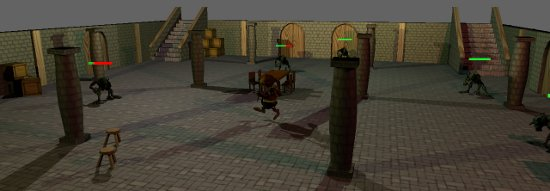
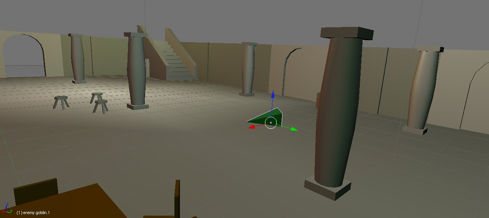
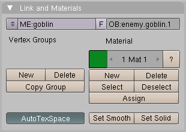

Aparición de enemigos y barras de vida
Jun 4, 2011 · 3 minute read · CommentsGames development

Estos días he estado trabajando en la carga de enemigos dentro de Sion Tower y en las barras de vida que veis sobre sus cabezas. Tras algún que otro comedero de cabeza he acabado con un sistema bastante sencillo y que funciona exactamente como yo quería. En los siguientes párrafos explico cómo están diseñadas la aparición (spawn) de enemigos y las barras de vida para finalizar con un vídeo del resultado.
Aparición de enemigos
Como ya he mencionado en varias ocasiones, Blender será el editor de niveles de Sion Tower. Desde esta potente herramienta definimos los objetos que componen el escenario, las zonas transitables por el enemigo (malla de navegación) y ahora los puntos y el momento en el que llegan las oleadas de enemigos. Todo esto se consigue gracias al formato de exportación DotScene y a una convención de nombres.
De la aparición o spawn de un enemigo concreto necesitamos conocer:
- Posición inicial.
- Orientación inicial.
- Tipo de enemigo.
- Momento en el que aparece.

En Blender utilizamos una pequeñas pirámides horizontales para indicar la aparición de enemigos. Los dos primeros puntos ya los da la propia posición y orientación del objeto mientras que el resto lo conseguimos con el nombre del mismo. Los nombres tienen la estructura “enemy.tipo.tiempo”. Por ejemplo, un Goblin que aparezca en el segundo 1 se llamaría “enemy.goblin.1” tal y como podéis ver en la siguiente figura.

La clase Level guarda un vector de objetos EnemySpawn que simplemente contienen la información de los cuatro puntos anteriores. El cada iteración de StateGame se consulta si en el momento actual debería aparecer algún enemigo y en caso afirmativo se crea uno con las propiedades adecuadas.
Si colocamos los enemigos en el centro del escenario aparecerán súbitamente (como se muestra en el vídeo). Lo ideal es colocarlos en las puertas y que ellos mismos se desplacen para atacar al protagonista.
Barra de vida
Las barras de vida son Billboards de Ogre, rectángulos que se colocan en el espacio 3D de la escena que siempre permanecen de frente hacia la cámara. En este caso les asignamos un material con una sencilla textura que cuenta con las dos partes de la vida: la roja y la verde. La idea es que según el porcentaje de energía que le reste al enemigo, seleccionemos una porción de dicha textura utilizando las coordenadas UV. En el siguiente diagrama se ilustra el sencillo mecanismo.

Al no haber usado Billboards con anterioridad, este fue el paso que más tiempo me llevó. La ignorancia es terrible porque al final no era nada complicado, en la clase Enemy tenemos los siguientes atributos.
class Enemy: public Actor {
...
private:
Ogre::BillboardSet* _bbSetLife;
Ogre::Billboard* _lifeBar;
Ogre::SceneNode* _lifeNode;
};
Para crear la barra de vida simplemente tenemos el método createLifeBar.
void Enemy::createLifeBar() {
_bbSetLife = _sceneManager->createBillboardSet();
_bbSetLife->setMaterialName("lifeBar");
_lifeBar = _bbSetLife->createBillboard(Ogre::Vector3(0, 1.6, 0));
_lifeBar->setDimensions(1, 0.1);
_lifeBar->setTexcoordRect(0.0f, 0.0f, 0.5f, 1.0f);
_lifeNode = _node->createChildSceneNode();
_lifeNode->attachObject(_bbSetLife);
}
El material “lifeBar” no podía ser más sencillo:
material lifeBar
{
technique
{
pass
{
emissive 0.7 0.7 0.7 1.0
texture_unit
{
texture life.png
}
}
}
}
En cada iteración o cuando el enemigo sea herido hemos de llamar a updateLifeBar.
void Enemy::updateLifeBar() {
Ogre::Real ratio = _energy / _maxEnergy;
if (ratio < 0.0f)
ratio = 0.0f;
Ogre::Real u1 = (1.0f - ratio) / 2.0f;
Ogre::Real v1 = 0.0f;
Ogre::Real u2 = 0.5f + (1.0f - ratio) / 2.0f;
Ogre::Real v2 = 1.0f;
_lifeBar->setTexcoordRect(u1, v1, u2, v2);
}
Vídeo
En el siguiente vídeo se muestra el sistema de spawn de enemigos junto a sus barras de vida. Todo esto es “work in progress” y aún queda mucho espacio para la mejora. Se esperan cambios en las animaciones del personaje, añadir efectos de sonido, incluir la IA de los enemigos… Sean comprensivos.